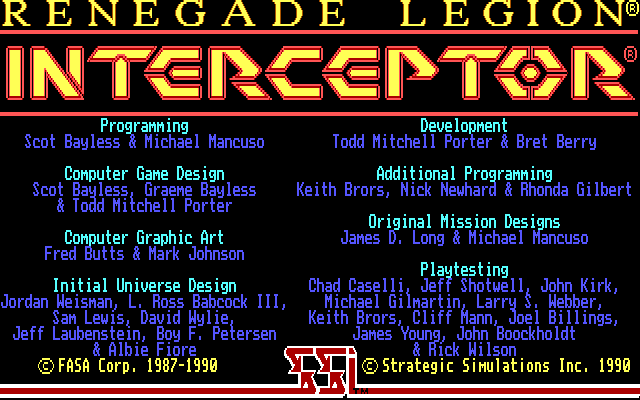
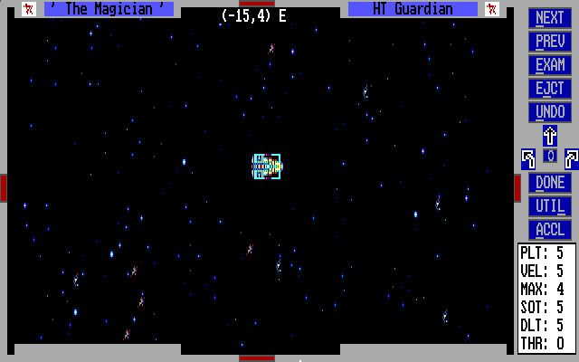

名稱：銀河風暴／叛逆軍團：攔截者 (Renegade Legion: Interceptor，英文版)
簡介：SSI 1990出品的回合制戰術遊戲，為同名桌遊的移植版，台灣由智冠代理進口。由於
遊戲規則相當複雜，必須仔細閱讀手冊並加以實驗才能逐漸理解，上手並不容易 [待補]。


備註：本版為1.1版
保護：圖案密碼（存檔時），破解碼：
START.EXE
74 09 80 7E E6 02
EB -- -- -- -- --
3B 46 E2 74 04
-- -- -- EB --